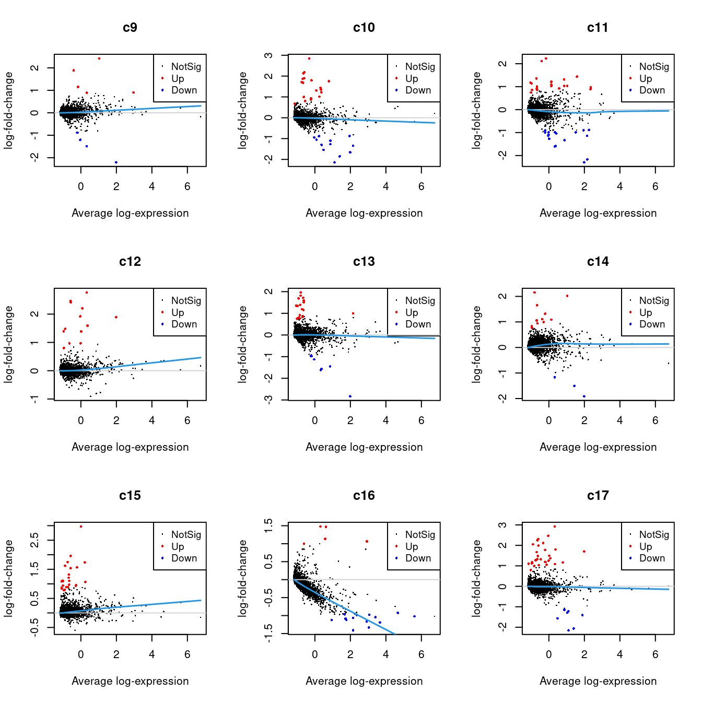
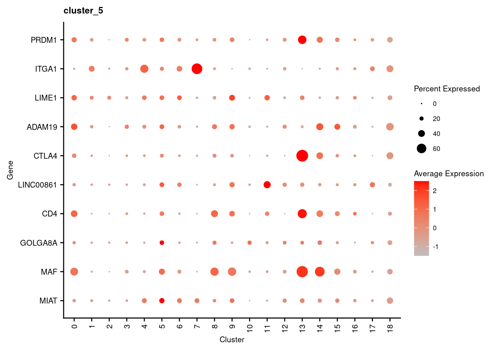

Last updated: 2022-04-26
Checks: 7 0
Knit directory: paed-cf-cite-seq/
This reproducible R Markdown analysis was created with workflowr (version 1.7.0). The Checks tab describes the reproducibility checks that were applied when the results were created. The Past versions tab lists the development history.
Great! Since the R Markdown file has been committed to the Git repository, you know the exact version of the code that produced these results.
Great job! The global environment was empty. Objects defined in the global environment can affect the analysis in your R Markdown file in unknown ways. For reproduciblity it’s best to always run the code in an empty environment.
The command set.seed(20210524) was run prior to running the code in the R Markdown file. Setting a seed ensures that any results that rely on randomness, e.g. subsampling or permutations, are reproducible.
Great job! Recording the operating system, R version, and package versions is critical for reproducibility.
Nice! There were no cached chunks for this analysis, so you can be confident that you successfully produced the results during this run.
Great job! Using relative paths to the files within your workflowr project makes it easier to run your code on other machines.
Great! You are using Git for version control. Tracking code development and connecting the code version to the results is critical for reproducibility.
The results in this page were generated with repository version 1116ab8. See the Past versions tab to see a history of the changes made to the R Markdown and HTML files.
Note that you need to be careful to ensure that all relevant files for the analysis have been committed to Git prior to generating the results (you can use wflow_publish or wflow_git_commit). workflowr only checks the R Markdown file, but you know if there are other scripts or data files that it depends on. Below is the status of the Git repository when the results were generated:
Ignored files:
Ignored: .Rhistory
Ignored: .Rproj.user/
Ignored: data/CellRanger/
Ignored: data/emptyDrops/bin/
Ignored: renv/library/
Ignored: renv/staging/
Untracked files:
Untracked: Rplots.pdf
Untracked: analysis/03_COMBO.annotation_markers.Rmd
Untracked: analysis/03_COMBO.protein_analysis.Rmd
Untracked: analysis/04_COMBO.compare_annotations.Rmd
Untracked: analysis/04_COMBO.proportion_analysis.Rmd
Untracked: analysis/scGateDB/
Untracked: code/03_C133_Neeland-dropletutils.R
Untracked: code/03_COMBO.proteins_geneBasis.R
Untracked: data/190930_A00152_0150_BHTYCMDSXX/
Untracked: data/Flow_data_CITEseq_2-8.csv
Untracked: data/GSE127465_RAW/
Untracked: data/GSE130148_barcodes_cell_types.txt
Untracked: data/GSE130148_raw_counts.RData
Untracked: data/Macrophage_subcluster_annotation_110322.csv
Untracked: data/Other_subcluster_annotation_110322.csv
Untracked: data/T-NK_subcluster_annotation_110322.csv
Untracked: data/T-NK_subcluster_proteins.csv
Untracked: data/T-NK_subcluster_proteins_110322.csv
Untracked: data/T-NK_subclusters_cytokines.csv
Untracked: data/T-NK_subclusters_markergenes_110322.csv
Untracked: data/TNK_subcluster_annotation_09.04.22.csv
Untracked: data/all_azimuth_cluster_cytokines.csv
Untracked: data/all_azimuth_clusters_proteins.csv
Untracked: data/cell_type_category_rna_Granulocytes_Cell.tsv
Untracked: data/consolidated_markers.rds
Untracked: data/gb-genes-50.rds
Untracked: data/genome1K.phase3.SNP_AF5e4.chr1toX.hg38.vcf.gz
Untracked: data/macrophage_subcluster_annotation_09.04.22.csv
Untracked: data/macrophage_subcluster_cytokines.csv
Untracked: data/macrophage_subcluster_markergenes_110322.csv
Untracked: data/macrophage_subcluster_markergenes_160322.csv
Untracked: data/macrophage_subcluster_proteins.csv
Untracked: data/macrophage_subcluster_proteins_110322.csv
Untracked: data/nCoV.all.cell.annotation.meta.txt
Untracked: data/nCoV.rds
Untracked: data/neutrophil.tsv
Untracked: data/other_subcluster_proteins.csv
Untracked: data/other_subcluster_proteins_110322.csv
Untracked: data/other_subclusters_cytokines.csv
Untracked: data/other_subclusters_markergenes_110322.csv
Untracked: data/others_subcluster_annotation_09.04.22.csv
Untracked: data/proteins_ranked.rds
Untracked: data/sample_sheets/Hashtag_Feature_Ref_With_Clin.csv
Untracked: data/sample_sheets/TotalSeq_A_Human_Universal_Cocktail_Proteins of interest_29.09.21.csv
Untracked: data/sample_sheets/TotalSeq_A_Human_Universal_Cocktail_Proteins_of_interest_28.06.21.csv
Untracked: output/ADT-counts.csv
Untracked: output/C133_Neeland.azimuth.individual_cell_type_proportions.csv
Untracked: output/C133_Neeland.azimuth.phenotype_information.csv
Untracked: output/C133_Neeland.individual_cell_type_proportions.csv
Untracked: output/C133_Neeland.phenotype_information.csv
Untracked: output/DEGs/
Untracked: output/glimma-plots/js/labelled-singlets-md-plot.js
Untracked: output/glimma-plots/js/qc-md-plot_03_C133_Neeland.js
Untracked: output/glimma-plots/js/qc-md-plot_C133_Neeland.js
Untracked: output/glimma-plots/js/qc-md-plot_CF-BAL-Pilot.js
Untracked: output/glimma-plots/labelled-singlets-md-plot.html
Untracked: output/glimma-plots/qc-md-plot_03_C133_Neeland.html
Untracked: output/glimma-plots/qc-md-plot_C133_Neeland.html
Untracked: output/glimma-plots/qc-md-plot_CF-BAL-Pilot.html
Untracked: output/marker-analysis-mod/
Untracked: output/marker-analysis/
Untracked: output/metadata.csv
Untracked: output/protein_labels.pdf
Untracked: scGateDB/
Untracked: wflow_background.R
Unstaged changes:
Modified: analysis/03_COMBO.cluster_macrophages.Rmd
Modified: analysis/03_COMBO.compare_annotations.Rmd
Modified: analysis/03_COMBO.proportion_analysis.Rmd
Modified: analysis/04_COMBO.postprocess_macrophages.Rmd
Modified: analysis/04_COMBO.postprocess_others.Rmd
Modified: analysis/04_COMBO.postprocess_tcells.Rmd
Modified: code/utility.R
Modified: data/SCEs/C133_Neeland.CellRanger.SCE.rds
Modified: data/SCEs/C133_Neeland.demultiplexed.SCE.rds
Deleted: data/SCEs/C133_Neeland.preprocessed.SCE.hto.rds
Deleted: data/SCEs/C133_Neeland.preprocessed.SCE_hto.rds
Deleted: data/SCEs/C133_Neeland.preprocessed.SCE_snp.rds
Modified: data/sample_sheets/TotalSeq-A_Universal_Cocktail_v1.0.csv
Modified: data/vireo/C133_1/GT_donors.vireo.vcf.gz
Modified: data/vireo/C133_1/_log.txt
Modified: data/vireo/C133_1/donor_ids.tsv
Modified: data/vireo/C133_1/fig_GT_distance_estimated.pdf
Modified: data/vireo/C133_1/prob_doublet.tsv.gz
Modified: data/vireo/C133_1/prob_singlet.tsv.gz
Modified: data/vireo/C133_1/summary.tsv
Modified: data/vireo/C133_2/GT_donors.vireo.vcf.gz
Modified: data/vireo/C133_2/_log.txt
Modified: data/vireo/C133_2/donor_ids.tsv
Modified: data/vireo/C133_2/fig_GT_distance_estimated.pdf
Modified: data/vireo/C133_2/prob_doublet.tsv.gz
Modified: data/vireo/C133_2/prob_singlet.tsv.gz
Modified: data/vireo/C133_2/summary.tsv
Modified: output/glimma-plots/js/qc-md-plot.js
Modified: output/glimma-plots/js/stripped-nuclei-md-plot.js
Modified: renv/.gitignore
Modified: renv/activate.R
Modified: renv/settings.dcf
Note that any generated files, e.g. HTML, png, CSS, etc., are not included in this status report because it is ok for generated content to have uncommitted changes.
These are the previous versions of the repository in which changes were made to the R Markdown (analysis/04_COMBO.cluster_tcells.Rmd) and HTML (docs/04_COMBO.cluster_tcells.html) files. If you’ve configured a remote Git repository (see ?wflow_git_remote), click on the hyperlinks in the table below to view the files as they were in that past version.
| File | Version | Author | Date | Message |
|---|---|---|---|---|
| html | 1116ab8 | Jovana Maksimovic | 2022-04-13 | Build site. |
| html | c5a35af | Jovana Maksimovic | 2022-04-07 | Build site. |
| Rmd | 882ebee | Jovana Maksimovic | 2022-04-07 | wflow_publish(c("analysis/04_COMBO.cluster_tcells.Rmd")) |
Load the clustered and labelled CF_BAL_Pilot and C133_Neeland data.
seu <- readRDS(file = here("data/SCEs/04_COMBO.clustered_annotated_adt_tcells_diet.SEU.rds"))
DefaultAssay(seu) <- "RNA"
entrez <- select(org.Hs.eg.db, columns = c("ENTREZID","SYMBOL"),
keys = keys(org.Hs.eg.db))
entrez <- entrez[!is.na(entrez$ENTREZID),]
seu <- seu[rownames(seu) %in% entrez$SYMBOL,]Normalise and integrate data.
out <- here("data/SCEs/04_COMBO.tcells_integrated.SEU.rds")
if(!file.exists(out)){
seuInt <- intDat(seu, type = "RNA",
reference = unique(seu$capture[seu$experiment == 1]))
saveRDS(seuInt, file = out)
} else {
seuInt <- readRDS(file = out)
}Visualise the data.
seuInt <- RunPCA(seuInt, verbose = FALSE, dims = 1:30) %>%
RunUMAP(verbose = FALSE, dims = 1:30)DimPlot(seuInt, group.by = "experiment", combine = FALSE)[[1]]
| Version | Author | Date |
|---|---|---|
| c5a35af | Jovana Maksimovic | 2022-04-07 |
p1 <- DimPlot(seuInt, reduction = "pca", group.by = "donor")
p2 <- DimPlot(seuInt, reduction = "pca", dims = c(1,3), group.by = "donor")
p3 <- DimPlot(seuInt, reduction = "pca", dims = c(2,3), group.by = "donor")
p4 <- DimPlot(seuInt, reduction = "pca", dims = c(3,4), group.by = "donor")
((p1 | p2) / (p3 | p4)) + plot_layout(guides = "collect") &
theme(legend.text = element_text(size = 8),
plot.title = element_text(size = 10),
axis.title = element_text(size = 9),
axis.text = element_text(size = 8))
| Version | Author | Date |
|---|---|---|
| c5a35af | Jovana Maksimovic | 2022-04-07 |
DimHeatmap(seuInt, dims = 1:30, cells = 500, balanced = TRUE)
| Version | Author | Date |
|---|---|---|
| c5a35af | Jovana Maksimovic | 2022-04-07 |
ElbowPlot(seuInt, ndims = 30)
| Version | Author | Date |
|---|---|---|
| c5a35af | Jovana Maksimovic | 2022-04-07 |
Examine cluster number and size with respect to resolution.
out <- here("data/SCEs/04_COMBO.tcells_clustered.SEU.rds")
if(!file.exists(out)){
seuInt <- FindNeighbors(seuInt, reduction = "pca", dims = 1:30)
seuInt <- FindClusters(seuInt, algorithm = 3,
resolution = seq(0.1, 1, by = 0.1))
seuInt <- RunUMAP(seuInt, dims = 1:10)
saveRDS(seuInt, file = out)
} else {
seuInt <- readRDS(file = out)
}
seuInt$integrated_snn_res.2 <- NULL
seuInt$integrated_snn_res.1.1 <- NULL
seuInt$integrated_snn_res.1.2 <- NULL
seuInt$integrated_snn_res.1.5 <- NULL
clustree::clustree(seuInt)
| Version | Author | Date |
|---|---|---|
| c5a35af | Jovana Maksimovic | 2022-04-07 |
Choose a resolution. Visualise UMAP.
options(ggrepel.max.overlaps = Inf)
grp <- "integrated_snn_res.1"
DimPlot(seuInt, reduction = 'umap', label = TRUE, repel = TRUE,
label.size = 2.5, group.by = grp) + NoLegend()
| Version | Author | Date |
|---|---|---|
| c5a35af | Jovana Maksimovic | 2022-04-07 |
DimPlot(seuInt, reduction = 'umap', label = TRUE, repel = TRUE,
label.size = 2.5, group.by = "predicted.annotation.l1")
| Version | Author | Date |
|---|---|---|
| c5a35af | Jovana Maksimovic | 2022-04-07 |
Visualise quality metrics by cluster.
seuInt@meta.data %>%
ggplot(aes(x = integrated_snn_res.1,
y = predicted.annotation.l1.score,
fill = integrated_snn_res.1)) +
geom_violin(scale = "width") +
NoLegend() -> p1
seuInt@meta.data %>%
ggplot(aes(x = integrated_snn_res.1,
y = nCount_RNA,
fill = integrated_snn_res.1)) +
geom_violin(scale = "area") +
scale_y_log10() +
NoLegend() -> p2
seuInt@meta.data %>%
ggplot(aes(x = integrated_snn_res.1,
y = nFeature_RNA,
fill = integrated_snn_res.1)) +
geom_violin(scale = "area") +
NoLegend() -> p3
seuInt@meta.data %>%
ggplot(aes(x = integrated_snn_res.1,
y = predicted.ann_level_3.score,
fill = integrated_snn_res.1)) +
geom_violin(scale = "area") +
scale_y_log10() +
NoLegend() -> p4
((p1 | p2) / (p3 | p4)) & theme(text = element_text(size = 8))
| Version | Author | Date |
|---|---|---|
| c5a35af | Jovana Maksimovic | 2022-04-07 |
# limma-trend for DE
Idents(seuInt) <- grp
counts <- as.matrix(seuInt[["RNA"]]@counts)
y.org <- DGEList(counts)
logcounts <- normCounts(y.org, log = TRUE, prior.count = 0.5)
maxclust <- length(levels(Idents(seuInt))) - 1
clustgrp <- paste0("c", Idents(seuInt))
clustgrp <- factor(clustgrp, levels = paste0("c", 0:maxclust))
donor <- seuInt$donor
design <- model.matrix(~ 0 + clustgrp + donor)
colnames(design)[1:(length(levels(clustgrp)))] <- levels(clustgrp)
# Create contrast matrix
mycont <- matrix(NA, ncol = length(levels(clustgrp)),
nrow = length(levels(clustgrp)))
rownames(mycont) <- colnames(mycont) <- levels(clustgrp)
diag(mycont) <- 1
mycont[upper.tri(mycont)] <- -1/(length(levels(factor(clustgrp))) - 1)
mycont[lower.tri(mycont)] <- -1/(length(levels(factor(clustgrp))) - 1)
# Fill out remaining rows with 0s
zero.rows <- matrix(0, ncol = length(levels(clustgrp)),
nrow = (ncol(design) - length(levels(clustgrp))))
fullcont <- rbind(mycont, zero.rows)
rownames(fullcont) <- colnames(design)
fit <- lmFit(logcounts, design)
fit.cont <- contrasts.fit(fit, contrasts = fullcont)
fit.cont <- eBayes(fit.cont, trend = TRUE, robust = TRUE)
summary(decideTests(fit.cont)) c0 c1 c2 c3 c4 c5 c6 c7 c8 c9 c10 c11
Down 609 662 1077 1019 449 1627 406 796 417 313 541 696
NotSig 14204 14550 13522 14196 14530 12954 14773 14073 14543 14754 13835 14179
Up 765 366 979 363 599 997 399 709 618 511 1202 703
c12 c13 c14 c15 c16 c17 c18
Down 197 375 224 67 1017 193 46
NotSig 15080 14367 14134 15240 13620 14861 13761
Up 301 836 1220 271 941 524 1771tr <- treat(fit.cont, fc = 1.5)
dt <- decideTests(tr)
summary(dt) c0 c1 c2 c3 c4 c5 c6 c7 c8 c9 c10 c11
Down 6 1 6 2 0 22 2 4 4 5 12 17
NotSig 15567 15572 15556 15572 15558 15554 15566 15545 15569 15568 15547 15539
Up 5 5 16 4 20 2 10 29 5 5 19 22
c12 c13 c14 c15 c16 c17 c18
Down 0 8 3 0 15 7 2
NotSig 15565 15552 15564 15554 15558 15542 15479
Up 13 18 11 24 5 29 97par(mfrow=c(3,3))
for(i in 1:ncol(mycont)){
plotMD(tr, coef = i, status = dt[,i], hl.cex = 0.5)
abline(h = 0, col = "lightgrey")
lines(lowess(tr$Amean, tr$coefficients[,i]), lwd = 1.5, col = 4)
}
| Version | Author | Date |
|---|---|---|
| c5a35af | Jovana Maksimovic | 2022-04-07 |

| Version | Author | Date |
|---|---|---|
| c5a35af | Jovana Maksimovic | 2022-04-07 |
| Version | Author | Date |
|---|---|---|
| c5a35af | Jovana Maksimovic | 2022-04-07 |
options(scipen=-1, digits = 6)
contnames <- colnames(mycont)
dirName <- here("output/marker-analysis/04-COMBO-tcells")
if(!dir.exists(dirName)) dir.create(dirName)
getCols <- setNames(c("SYMBOL","ENTREZID"),c("SYMBOL","ENTREZID"))
tr$genes <- data.frame(
lapply(getCols, function(column) {
mapIds(
x = org.Hs.eg.db,
keys = rownames(tr),
keytype = "SYMBOL",
column = column)
}),
row.names = rownames(tr))
gsAnnots <- buildIdx(entrezIDs = tr$genes$ENTREZID, species = "human",
msigdb.gsets = c("c2","c5"))[1] "Loading MSigDB Gene Sets ... "
[1] "Loaded gene sets for the collection c2 ..."
[1] "Indexed the collection c2 ..."
[1] "Created annotation for the collection c2 ..."
[1] "Loaded gene sets for the collection c5 ..."
[1] "Indexed the collection c5 ..."
[1] "Created annotation for the collection c5 ..."
[1] "Building KEGG pathways annotation object ... "reactomeIdx <-gsAnnots$c2@idx[grep("REACTOME",
names(gsAnnots$c2@idx))]
for(i in 1:length(contnames)){
top <- topTreat(tr, coef = i, n = Inf)
top <- top[top$logFC > 0, ]
write.csv(top[1:100, ],
file = glue("{dirName}/up-cluster-{contnames[i]}.csv"))
cameraPR(tr$t[,i], reactomeIdx) %>%
rownames_to_column(var = "Pathway") %>%
slice_head(n = 20) %>%
write_csv(file = here(glue("{dirName}/REACTOME-cluster-{contnames[i]}.csv")))
}Genes duplicated between clusters are excluded.
sig.genes <- vector("list", ncol(tr))
p <- vector("list",length(sig.genes))
DefaultAssay(seuInt) <- "RNA"
for(i in 1:length(sig.genes)){
top <- topTreat(tr, coef = i, n = Inf)
sig.genes[[i]] <- rownames(top)[top$logFC > 0][1:10]
}
sig <- unlist(sig.genes)
geneCols <- c(rep(rep(c("grey","black"), each = 10), ncol(tr)/2),
rep("grey", 10))[!duplicated(sig)]
DotPlot(seuInt, features = sig[!duplicated(sig)],
group.by = "integrated_snn_res.1",
cols = c("lightgrey", "red"),
dot.scale = 3) +
RotatedAxis() +
FontSize(y.text = 8, x.text = 12) +
labs(y = element_blank(), x = element_blank()) +
coord_flip() +
theme(axis.text.y = element_text(color = geneCols)) +
ggtitle("Top 10 cluster marker genes without duplicates")
| Version | Author | Date |
|---|---|---|
| c5a35af | Jovana Maksimovic | 2022-04-07 |
seuInt@meta.data %>%
ggplot(aes(x = integrated_snn_res.1, fill = integrated_snn_res.1)) +
geom_bar() +
geom_text(aes(label = ..count..), stat = "count",
vjust = -0.5, colour = "black", size = 2) +
theme(axis.text.x = element_text(angle = 90, vjust = 0.5, hjust = 1)) +
NoLegend()
| Version | Author | Date |
|---|---|---|
| c5a35af | Jovana Maksimovic | 2022-04-07 |
Cepo cluster marker genescepoMarkers <- Cepo(seuInt[["RNA"]]@data,
seuInt$integrated_snn_res.1,
exprsPct = 0.1,
logfc = 1)
sapply(1:ncol(cepoMarkers$stats), function(i){
names(sort(cepoMarkers$stats[,i], decreasing = TRUE))[1:20]
}) -> dat
colnames(dat) <- gsub("X", "cluster_", colnames(cepoMarkers$stats))
dat %>% knitr::kable()| cluster_0 | cluster_1 | cluster_10 | cluster_11 | cluster_12 | cluster_13 | cluster_14 | cluster_15 | cluster_16 | cluster_17 | cluster_18 | cluster_2 | cluster_3 | cluster_4 | cluster_5 | cluster_6 | cluster_7 | cluster_8 | cluster_9 |
|---|---|---|---|---|---|---|---|---|---|---|---|---|---|---|---|---|---|---|
| LINC01943 | LINC02446 | SPINK2 | CCR7 | KLRG1 | IL2RA | TNFRSF4 | IFIT1 | MARCKS | KLRF1 | TYMS | MAL | SNHG12 | GZMH | MIAT | GZMH | KIR2DL4 | PASK | TNFRSF4 |
| CD4 | ZNF683 | KRT81 | MAL | TRDC | IL1R2 | IL4I1 | RSAD2 | MS4A6A | NCAM1 | MKI67 | LEF1 | CD8B | CD8B | MAF | GZMK | KLRC2 | IL4I1 | MAL |
| CTSH | KLRC1 | LINC00996 | SELL | ZBTB16 | FANK1 | TNFRSF18 | HERC5 | GPNMB | TRDC | PCLAF | TRDC | CISH | GZMB | GOLGA8A | CD8B | KLRC1 | IL6R | KLF2 |
| MAF | KLRC2 | TRDC | LEF1 | TRGC1 | CTLA4 | IL2RA | IFIT3 | OLR1 | KRT81 | RRM2 | XCL1 | CD8A | CD8A | CD4 | EOMES | CD160 | CD4 | ZC3H12D |
| CCL20 | CD8B | NCAM1 | PASK | SLC4A10 | ICA1 | ZC3H12D | CMPK2 | KYNU | CCL3 | ZWINT | ZNF683 | LINC02446 | ITGA1 | LINC00861 | CCL4 | SPRY2 | ICA1 | MAF |
| ADAM19 | XCL2 | XCL1 | LDLRAP1 | GZMK | LAIR2 | CSF2 | OAS1 | SPI1 | LAT2 | NUSAP1 | KLRC3 | SPRY1 | ZNF683 | CTLA4 | CD8A | CLNK | TOX2 | KLF3 |
| CXCR6 | CD8A | ITGAX | PLAC8 | CEBPD | TBC1D4 | RELB | IFI44L | SLC15A3 | XCL1 | CDT1 | SPINT2 | LINC01943 | IFNG | ADAM19 | KLRG1 | DAPK2 | MAF | SELL |
| CTLA4 | GZMH | KRT86 | ACTN1 | PLEK | LAYN | NFKB2 | MX2 | S100A9 | KLRC1 | CLSPN | RTKN2 | IFNG | DAPK2 | LIME1 | GZMB | NMUR1 | TCF7 | CD4 |
| SIT1 | CCL4 | KLRF1 | TXK | CCL3 | IL1R1 | MIR155HG | USP18 | AIF1 | XCL2 | ASF1B | NCR3 | ANKRD28 | KLRC2 | ITGA1 | TIGIT | CSF1 | TNFRSF25 | IL6R |
| PTTG1 | KLRD1 | CXXC5 | KLF3 | CCL4 | LINC01943 | CCL20 | OAS3 | MS4A7 | KRT86 | TOP2A | KLRC2 | XCL2 | LINC02446 | PRDM1 | AOAH | ZNF683 | TBC1D4 | TNFRSF25 |
| TRAT1 | ITGA1 | AREG | TCF7 | KLRC1 | TNFRSF4 | CD82 | IFIT2 | HLA-DMB | TXK | CENPW | CXXC5 | KLRD1 | KLRD1 | PAG1 | LAG3 | CCL4L2 | ICOS | PASK |
| CD6 | TRGC2 | XCL2 | FCMR | NCR3 | TNFRSF9 | FURIN | IFI44 | CTSH | CLIC3 | CDK1 | LINC02446 | PHGDH | CXCL13 | BCL11B | CD27 | LINC02446 | IL7R | AQP3 |
| IFNG | IFNG | IFITM3 | ABLIM1 | PRF1 | TIGIT | TNFRSF25 | MX1 | CCDC88A | ZBTB16 | TPX2 | IKZF2 | CDCA7 | CCL4 | CCL4 | PLEK | GNLY | PHACTR2 | GPR183 |
| CORO1B | CLNK | MFGE8 | LINC00861 | CCL4L2 | RTKN2 | MAF | DDX58 | FCGRT | CXXC5 | CDCA5 | TCF7 | MTHFD2 | CXCR6 | ANKRD28 | GZMA | CCL3L1 | GPR183 | RIPOR2 |
| CCDC167 | CCL4L2 | TXK | CD55 | LAG3 | IKZF4 | CCR7 | DDX60 | GSN | PTGDR | BIRC5 | IFITM3 | PAG1 | LAG3 | ZC3H12D | CCL4L2 | ITGA1 | SPINT2 | IL7R |
| LMNA | KLRK1 | FXYD7 | RTKN2 | EOMES | CD79B | CTLA4 | HELZ2 | C1QC | EOMES | UBE2C | SPRY2 | KLRC1 | KLRC1 | TRIM22 | TNFRSF9 | GZMB | CCR7 | LINC01943 |
| LIME1 | CD160 | KLRC1 | KLF2 | GZMB | CD4 | CD83 | PNPT1 | ALDH2 | LINC00996 | ASPM | TRGC2 | BHLHE40 | CCL3L1 | CD6 | ITGA1 | ENTPD1 | CCL20 | LEF1 |
| PRDM1 | CDCA7 | KIR2DL4 | SATB1 | NKG7 | TNFRSF18 | NME1 | PLSCR1 | HLA-DQA1 | CEBPD | TK1 | ID3 | PERP | CCL4L2 | PARP14 | NKG7 | PIK3AP1 | PIK3IP1 | IL2RA |
| GPR183 | GZMB | GNLY | IL6R | CD300A | ZC2HC1A | DNPH1 | OAS2 | TNFAIP2 | KIR2DL4 | UHRF1 | TXK | TRAT1 | GZMA | RORA | SAMD3 | SRGAP3 | RGS1 | CTSH |
| IL6R | LAG3 | SELL | IL7R | CTSW | ADTRP | SNX9 | PARP9 | CD68 | PLEK | CENPM | PLAC8 | BCL2 | NKG7 | SCML4 | CCL3 | IFNG | CAMK4 | LIME1 |
Cepo cluster marker expressionp <- vector("list", ncol(dat))
for(i in 1:length(p)){
p[[i]] <- DotPlot(seuInt,
features = dat[,i][1:10],
cols = c("grey", "red"),
dot.scale = 5,
assay = "RNA",
group.by = "integrated_snn_res.1") +
theme(axis.text.x = element_text(angle = 90,
hjust = 1,
vjust = 0.5,
size = 8),
axis.text.y = element_text(size = 8),
text = element_text(size = 8)) +
coord_flip() +
labs(y = "Cluster", x = "Gene") +
ggtitle(colnames(dat)[i])
}
p[[1]]
| Version | Author | Date |
|---|---|---|
| c5a35af | Jovana Maksimovic | 2022-04-07 |
[[2]]
| Version | Author | Date |
|---|---|---|
| c5a35af | Jovana Maksimovic | 2022-04-07 |
[[3]]
| Version | Author | Date |
|---|---|---|
| c5a35af | Jovana Maksimovic | 2022-04-07 |
[[4]]
| Version | Author | Date |
|---|---|---|
| c5a35af | Jovana Maksimovic | 2022-04-07 |
[[5]]
| Version | Author | Date |
|---|---|---|
| c5a35af | Jovana Maksimovic | 2022-04-07 |
[[6]]
| Version | Author | Date |
|---|---|---|
| c5a35af | Jovana Maksimovic | 2022-04-07 |
[[7]]
| Version | Author | Date |
|---|---|---|
| c5a35af | Jovana Maksimovic | 2022-04-07 |
[[8]]
| Version | Author | Date |
|---|---|---|
| c5a35af | Jovana Maksimovic | 2022-04-07 |
[[9]]
| Version | Author | Date |
|---|---|---|
| c5a35af | Jovana Maksimovic | 2022-04-07 |
[[10]]
| Version | Author | Date |
|---|---|---|
| c5a35af | Jovana Maksimovic | 2022-04-07 |
[[11]]
| Version | Author | Date |
|---|---|---|
| c5a35af | Jovana Maksimovic | 2022-04-07 |
[[12]]
| Version | Author | Date |
|---|---|---|
| c5a35af | Jovana Maksimovic | 2022-04-07 |
[[13]]
| Version | Author | Date |
|---|---|---|
| c5a35af | Jovana Maksimovic | 2022-04-07 |
[[14]]
| Version | Author | Date |
|---|---|---|
| c5a35af | Jovana Maksimovic | 2022-04-07 |
[[15]]
| Version | Author | Date |
|---|---|---|
| c5a35af | Jovana Maksimovic | 2022-04-07 |
[[16]]
| Version | Author | Date |
|---|---|---|
| c5a35af | Jovana Maksimovic | 2022-04-07 |
[[17]]
| Version | Author | Date |
|---|---|---|
| c5a35af | Jovana Maksimovic | 2022-04-07 |
[[18]]
| Version | Author | Date |
|---|---|---|
| c5a35af | Jovana Maksimovic | 2022-04-07 |
[[19]]
| Version | Author | Date |
|---|---|---|
| c5a35af | Jovana Maksimovic | 2022-04-07 |
markers <- read_csv(file = here("data",
"T-NK_subclusters_cytokines.csv"),
col_names = FALSE)
p <- DotPlot(seuInt,
features = markers$X1,
cols = c("grey", "red"),
dot.scale = 5,
assay = "RNA",
group.by = "integrated_snn_res.1") +
theme(axis.text.x = element_text(angle = 90,
hjust = 1,
vjust = 0.5,
size = 8),
axis.text.y = element_text(size = 8),
text = element_text(size = 8)) +
coord_flip() +
labs(y = "Cluster", x = "Cytokine")
p
| Version | Author | Date |
|---|---|---|
| c5a35af | Jovana Maksimovic | 2022-04-07 |
Separate out the C133_Neeland data and add the protein marker (ADT) data.
# Load C133_Neeland ADT data
sceNeeland <- readRDS(here("data", "SCEs",
"03_C133_Neeland.preprocessed.SCE.rds"))
# Extract C133_Neeland RNA data from Seurat object
seuNeeland <- seuInt[, seuInt$experiment == 2]
# Create cell ID that matched SCE object
sceNeeland$ID <- paste0("B-", colnames(sceNeeland))
# Check that all cells in Seurat object are also in SCE object
all(colnames(seuNeeland) %in% sceNeeland$ID)[1] TRUE# Match up and subset Seurat and SCE objects
m <- match(colnames(seuNeeland), sceNeeland$ID)
sceNeeland <- sceNeeland[, m]
# Check that cell IDs match
all(colnames(seuNeeland) == sceNeeland$ID)[1] TRUE# Change SCE cell IDs so that they are consistent with combined data
colnames(sceNeeland) <- sceNeeland$ID
# Update meta data in SCE object
colData(sceNeeland) <- DataFrame(seuNeeland@meta.data)
# Add ADT data to Seurat object
# Create a new assay to store ADT information
adt <- CreateAssayObject(counts = counts(altExp(sceNeeland, "ADT")))
# add this assay to the previously created Seurat object
seuNeeland[["ADT"]] <- adt
# Validate that the object now contains multiple assays
seuNeelandAn object of class Seurat
30640 features across 2715 samples within 4 assays
Active assay: RNA (15578 features, 0 variable features)
3 other assays present: SCT, integrated, ADT
2 dimensional reductions calculated: pca, umaprm(seuInt)
gc() used (Mb) gc trigger (Mb) max used (Mb)
Ncells 14520397 775.5 24177667 1291.3 24177667 1291.3
Vcells 444298720 3389.8 971502081 7412.0 971501194 7412.0proteins <- read_csv(file = here("data/sample_sheets/TotalSeq-A_Universal_Cocktail_v1.0.csv"))
rowData(altExp(sceNeeland, "ADT")) %>%
data.frame %>%
left_join(proteins, by = c("ID" = "id")) %>%
DataFrame -> rowData(altExp(sceNeeland, "ADT"))
altExp(sceNeeland, "ADT") <- altExp(sceNeeland, "ADT")[!is.na(rowData(altExp(sceNeeland, "ADT"))$name),]
rowData(altExp(sceNeeland, "ADT")) %>%
data.frame %>%
dplyr::select(ID, Symbol, name) %>%
knitr::kable()| ID | Symbol | name | |
|---|---|---|---|
| A0006 | A0006 | anti-human CD86 | anti-human CD86 |
| A0007 | A0007 | anti-human CD274 (B7-H1, PD-L1) | anti-human CD274 (B7-H1, PD-L1) |
| A0020 | A0020 | anti-human CD270 (HVEM, TR2) | anti-human CD270 (HVEM, TR2) |
| A0023 | A0023 | anti-human CD155 (PVR) | anti-human CD155 (PVR) |
| A0024 | A0024 | anti-human CD112 (Nectin-2) | anti-human CD112 (Nectin-2) |
| A0026 | A0026 | anti-human CD47 | anti-human CD47 |
| A0029 | A0029 | anti-human CD48 | anti-human CD48 |
| A0031 | A0031 | anti-human CD40 | anti-human CD40 |
| A0032 | A0032 | anti-human CD154 | anti-human CD154 |
| A0033 | A0033 | anti-human CD52 | anti-human CD52 |
| A0034 | A0034 | anti-human CD3 | anti-human CD3 |
| A0046 | A0046 | anti-human CD8 | anti-human CD8 |
| A0047 | A0047 | anti-human CD56 (NCAM) | anti-human CD56 (NCAM) |
| A0050 | A0050 | anti-human CD19 | anti-human CD19 |
| A0052 | A0052 | anti-human CD33 | anti-human CD33 |
| A0053 | A0053 | anti-human CD11c | anti-human CD11c |
| A0058 | A0058 | anti-human HLA-A,B,C | anti-human HLA-A,B,C |
| A0063 | A0063 | anti-human CD45RA | anti-human CD45RA |
| A0064 | A0064 | anti-human CD123 | anti-human CD123 |
| A0066 | A0066 | anti-human CD7 | anti-human CD7 |
| A0070 | A0070 | anti-human/mouse CD49f | anti-human/mouse CD49f |
| A0071 | A0071 | anti-human CD194 (CCR4) | anti-human CD194 (CCR4) |
| A0072 | A0072 | anti-human CD4 | anti-human CD4 |
| A0073 | A0073 | anti-mouse/human CD44 | anti-mouse/human CD44 |
| A0081 | A0081 | anti-human CD14 | anti-human CD14 |
| A0083 | A0083 | anti-human CD16 | anti-human CD16 |
| A0085 | A0085 | anti-human CD25 | anti-human CD25 |
| A0087 | A0087 | anti-human CD45RO | anti-human CD45RO |
| A0088 | A0088 | anti-human CD279 (PD-1) | anti-human CD279 (PD-1) |
| A0089 | A0089 | anti-human TIGIT (VSTM3) | anti-human TIGIT (VSTM3) |
| A0090 | A0090 | Mouse IgG1, _ isotype Ctrl | Mouse IgG1, κ isotype Ctrl |
| A0091 | A0091 | Mouse IgG2a, _ isotype Ctrl | Mouse IgG2a, κ isotype Ctrl |
| A0092 | A0092 | Mouse IgG2b, _ isotype Ctrl | Mouse IgG2b, κ isotype Ctrl |
| A0095 | A0095 | Rat IgG2b, _ Isotype Ctrl | Rat IgG2b, κ Isotype Ctrl |
| A0100 | A0100 | anti-human CD20 | anti-human CD20 |
| A0101 | A0101 | anti-human CD335 (NKp46) | anti-human CD335 (NKp46) |
| A0124 | A0124 | anti-human CD31 | anti-human CD31 |
| A0127 | A0127 | anti-Human Podoplanin | anti-Human Podoplanin |
| A0134 | A0134 | anti-human CD146 | anti-human CD146 |
| A0136 | A0136 | anti-human IgM | anti-human IgM |
| A0138 | A0138 | anti-human CD5 | anti-human CD5 |
| A0140 | A0140 | anti-human CD183 (CXCR3) | anti-human CD183 (CXCR3) |
| A0141 | A0141 | anti-human CD195 (CCR5) | anti-human CD195 (CCR5) |
| A0142 | A0142 | anti-human CD32 | anti-human CD32 |
| A0143 | A0143 | anti-human CD196 (CCR6) | anti-human CD196 (CCR6) |
| A0144 | A0144 | anti-human CD185 (CXCR5) | anti-human CD185 (CXCR5) |
| A0145 | A0145 | Hu CD103 (Integrin _E) | Hu CD103 (Integrin αE) |
| A0146 | A0146 | anti-human CD69 | anti-human CD69 |
| A0147 | A0147 | anti-human CD62L | anti-human CD62L |
| A0149 | A0149 | anti-human CD161 | anti-human CD161 |
| A0151 | A0151 | anti-human CD152 (CTLA-4) | anti-human CD152 (CTLA-4) |
| A0152 | A0152 | anti-human CD223 (LAG-3) | anti-human CD223 (LAG-3) |
| A0153 | A0153 | anti-human KLRG1 (MAFA) | anti-human KLRG1 (MAFA) |
| A0154 | A0154 | anti-human CD27 | anti-human CD27 |
| A0155 | A0155 | anti-human CD107a (LAMP-1) | anti-human CD107a (LAMP-1) |
| A0156 | A0156 | anti-human CD95 (Fas) | anti-human CD95 (Fas) |
| A0158 | A0158 | anti-human CD134 (OX40) | anti-human CD134 (OX40) |
| A0159 | A0159 | anti-human HLA-DR | anti-human HLA-DR |
| A0160 | A0160 | anti-human CD1c | anti-human CD1c |
| A0161 | A0161 | anti-human CD11b | anti-human CD11b |
| A0162 | A0162 | anti-human CD64 | anti-human CD64 |
| A0163 | A0163 | anti-human CD141 (Thrombomodulin) | anti-human CD141 (Thrombomodulin) |
| A0165 | A0165 | Hu CD314 (NKG2D) | Hu CD314 (NKG2D) |
| A0167 | A0167 | anti-human CD35 | anti-human CD35 |
| A0168 | A0168 | anti-human CD57 Recombinant | anti-human CD57 Recombinant |
| A0170 | A0170 | anti-human CD272 (BTLA) | anti-human CD272 (BTLA) |
| A0171 | A0171 | anti-human/mouse/rat CD278 (ICOS) | anti-human/mouse/rat CD278 (ICOS) |
| A0172 | A0172 | anti-human CD275 (B7-H2, B7-RP1, ICOSL) | anti-human CD275 (B7-H2, B7-RP1, ICOSL) |
| A0174 | A0174 | anti-human CD58 (LFA-3) | anti-human CD58 (LFA-3) |
| A0176 | A0176 | anti-human CD39 | anti-human CD39 |
| A0179 | A0179 | anti-human CX3CR1 | anti-human CX3CR1 |
| A0180 | A0180 | anti-human CD24 | anti-human CD24 |
| A0181 | A0181 | anti-human CD21 | anti-human CD21 |
| A0185 | A0185 | anti-human CD11a | anti-human CD11a |
| A0187 | A0187 | anti-human CD79b (Ig_) | anti-human CD79b (Igβ) |
| A0189 | A0189 | anti-human CD244 (2B4) | anti-human CD244 (2B4) |
| A0206 | A0206 | anti-human CD169 (Sialoadhesin, Siglec-1) | anti-human CD169 (Sialoadhesin, Siglec-1) |
| A0214 | A0214 | anti-human/mouse integrin _7 | anti-human/mouse integrin β7 |
| A0215 | A0215 | anti-human CD268 (BAFF-R) | anti-human CD268 (BAFF-R) |
| A0216 | A0216 | anti-human CD42b | anti-human CD42b |
| A0217 | A0217 | anti-human CD54 | anti-human CD54 |
| A0218 | A0218 | anti-human CD62P (P-Selectin) | anti-human CD62P (P-Selectin) |
| A0219 | A0219 | anti-human CD119 (IFN-_ R _ chain) | anti-human CD119 (IFN-γ R α chain) |
| A0224 | A0224 | anti-human TCR / | anti-human TCR α/β |
| A0236 | A0236 | Rat IgG1, _ isotype Ctrl | Rat IgG1, κ isotype Ctrl |
| A0237 | A0237 | Rat IgG1, _ Isotype Ctrl | Rat IgG1, λ Isotype Ctrl |
| A0238 | A0238 | Rat IgG2a, _ Isotype Ctrl | Rat IgG2a, κ Isotype Ctrl |
| A0240 | A0240 | Rat IgG2c, _ Isotype Ctrl | Rat IgG2c, κ Isotype Ctrl |
| A0241 | A0241 | Armenian Hamster IgG Isotype Ctrl | Armenian Hamster IgG Isotype Ctrl |
| A0242 | A0242 | anti-human CD192 (CCR2) | anti-human CD192 (CCR2) |
| A0246 | A0246 | anti-human CD122 (IL-2R_) | anti-human CD122 (IL-2Rβ) |
| A0247 | A0247 | anti-human CD267 (TACI) | anti-human CD267 (TACI) |
| A0352 | A0352 | anti-human Fc_RI_ | anti-human FcεRIα |
| A0353 | A0353 | anti-human CD41 | anti-human CD41 |
| A0355 | A0355 | anti-human CD137 (4-1BB) | anti-human CD137 (4-1BB) |
| A0357 | A0357 | anti-human CD43 | anti-human CD43 |
| A0358 | A0358 | anti-human CD163 | anti-human CD163 |
| A0359 | A0359 | anti-human CD83 | anti-human CD83 |
| A0364 | A0364 | anti-human CD13 | anti-human CD13 |
| A0367 | A0367 | anti-human CD2 | anti-human CD2 |
| A0368 | A0368 | anti-human CD226 (DNAM-1) | anti-human CD226 (DNAM-1) |
| A0369 | A0369 | anti-human CD29 | anti-human CD29 |
| A0370 | A0370 | anti-human CD303 (BDCA-2) | anti-human CD303 (BDCA-2) |
| A0371 | A0371 | anti-human CD49b | anti-human CD49b |
| A0372 | A0372 | anti-human CD61 | anti-human CD61 |
| A0373 | A0373 | anti-human CD81 (TAPA-1) | anti-human CD81 (TAPA-1) |
| A0383 | A0383 | anti-human CD55 | anti-human CD55 |
| A0384 | A0384 | anti-human IgD | anti-human IgD |
| A0385 | A0385 | anti-human CD18 | anti-human CD18 |
| A0386 | A0386 | anti-human CD28 | anti-human CD28 |
| A0389 | A0389 | anti-human CD38 | anti-human CD38 |
| A0390 | A0390 | anti-human CD127 (IL-7R_) | anti-human CD127 (IL-7Rα) |
| A0391 | A0391 | anti-human CD45 | anti-human CD45 |
| A0393 | A0393 | anti-human CD22 | anti-human CD22 |
| A0394 | A0394 | anti-human CD71 | anti-human CD71 |
| A0396 | A0396 | anti-human CD26 | anti-human CD26 |
| A0398 | A0398 | anti-human CD115 (CSF-1R) | anti-human CD115 (CSF-1R) |
| A0404 | A0404 | anti-human CD63 | anti-human CD63 |
| A0406 | A0406 | anti-human CD304 (Neuropilin-1) | anti-human CD304 (Neuropilin-1) |
| A0407 | A0407 | anti-human CD36 | anti-human CD36 |
| A0408 | A0408 | anti-human CD172a (SIRP_) | anti-human CD172a (SIRPα) |
| A0419 | A0419 | anti-human CD72 | anti-human CD72 |
| A0420 | A0420 | anti-human CD158 (KIR2DL1/S1/S3/S5) | anti-human CD158 (KIR2DL1/S1/S3/S5) |
| A0446 | A0446 | anti-human CD93 | anti-human CD93 |
| A0447 | A0447 | anti-human CD200 (OX2) | anti-human CD200 (OX2) |
| A0575 | A0575 | anti-human CD49a | anti-human CD49a |
| A0576 | A0576 | anti-human CD49d | anti-human CD49d |
| A0577 | A0577 | anti-human CD73 (Ecto-5’-nucleotidase) | anti-human CD73 (Ecto-5’-nucleotidase) |
| A0579 | A0579 | anti-human CD9 | anti-human CD9 |
| A0581 | A0581 | anti-human TCR V_7.2 | anti-human TCR Vα7.2 |
| A0582 | A0582 | anti-human TCR V_2 | anti-human TCR Vδ2 |
| A0586 | A0586 | anti-human CD354 (TREM-1) | anti-human CD354 (TREM-1) |
| A0590 | A0590 | anti-human CD305 (LAIR1) | anti-human CD305 (LAIR1) |
| A0591 | A0591 | anti-human LOX-1 | anti-human LOX-1 |
| A0599 | A0599 | anti-human CD158e1 (KIR3DL1, NKB1) | anti-human CD158e1 (KIR3DL1, NKB1) |
| A0817 | A0817 | anti-human CD109 | anti-human CD109 |
| A0822 | A0822 | anti-human CD142 | anti-human CD142 |
| A0830 | A0830 | anti-human CD319 (CRACC) | anti-human CD319 (CRACC) |
| A0845 | A0845 | anti-human CD99 | anti-human CD99 |
| A0853 | A0853 | anti-human CLEC12A | anti-human CLEC12A |
| A0861 | A0861 | anti-human CD151 (PETA-3) | anti-human CD151 (PETA-3) |
| A0864 | A0864 | anti-human CD352 (NTB-A) | anti-human CD352 (NTB-A) |
| A0866 | A0866 | anti-human CLEC1B (CLEC2) | anti-human CLEC1B (CLEC2) |
| A0867 | A0867 | anti-human CD94 | anti-human CD94 |
| A0868 | A0868 | anti-human IgE | anti-human IgE |
| A0870 | A0870 | anti-human CD150 (SLAM) | anti-human CD150 (SLAM) |
| A0871 | A0871 | anti-human CD162 | anti-human CD162 |
| A0872 | A0872 | anti-human CD84 | anti-human CD84 |
| A0894 | A0894 | anti-human Ig light chain _ | anti-human Ig light chain κ |
| A0896 | A0896 | anti-human CD85j (ILT2) | anti-human CD85j (ILT2) |
| A0897 | A0897 | anti-human CD23 | anti-human CD23 |
| A0898 | A0898 | anti-human Ig light chain _ | anti-human Ig light chain λ |
| A0902 | A0902 | anti-human CD328 (Siglec-7) | anti-human CD328 (Siglec-7) |
| A0912 | A0912 | anti-human GPR56 | anti-human GPR56 |
| A0920 | A0920 | anti-human CD82 | anti-human CD82 |
| A0923 | A0923 | anti-human NKp80 | anti-human NKp80 |
| A0931 | A0931 | anti-human CD131 | anti-human CD131 |
| A0935 | A0935 | anti-human CD74 | anti-human CD74 |
| A0940 | A0940 | anti-human CD116 | anti-human CD116 |
| A0941 | A0941 | anti-human CD37 | anti-human CD37 |
| A0944 | A0944 | anti-human CD101 (BB27) | anti-human CD101 (BB27) |
| A1018 | A1018 | anti-human HLA-DR, DP, DQ | anti-human HLA-DR, DP, DQ |
| A1046 | A1046 | anti-human CD88 (C5aR) | anti-human CD88 (C5aR) |
controls <- grep("IgG", rowData(altExp(sceNeeland, "ADT"))$name)
colData(altExp(sceNeeland, "ADT")) <- perCellQCMetrics(altExp(sceNeeland, "ADT"),
subsets = list(controls = controls))p1 <- colData(altExp(sceNeeland, "ADT")) %>% data.frame %>%
ggplot(aes(x = sceNeeland$donor, y = sum, fill = sceNeeland$donor)) +
geom_violin() +
labs(x = "Donor", y = "Library size") + NoLegend() +
geom_hline(yintercept = median(colData(altExp(sceNeeland, "ADT"))$sum),
linetype = "dashed") +
scale_y_log10()
p2 <- colData(altExp(sceNeeland, "ADT")) %>% data.frame %>%
ggplot(aes(x = sceNeeland$donor, y = detected, fill = sceNeeland$donor)) +
geom_violin() +
labs(x = "Donor", y = "No. ADT detected") + NoLegend() +
geom_hline(yintercept = median(colData(altExp(sceNeeland, "ADT"))$detected),
linetype = "dashed")
(p1 | p2) & theme(axis.text.x = element_text(angle = 90, hjust = 1, vjust = 0.5))
| Version | Author | Date |
|---|---|---|
| c5a35af | Jovana Maksimovic | 2022-04-07 |
sf.lib <- librarySizeFactors(altExp(sceNeeland, "ADT"))
sizeFactors(altExp(sceNeeland, "ADT")) <- pmax(sf.lib, min(sf.lib[sf.lib > 0]))
sceNeeland <- applySCE(sceNeeland, logNormCounts, WHICH = "ADT")
# Checking that we have normalized values:
assayNames(altExp(sceNeeland, "ADT"))[1] "counts" "logcounts"se.averaged <- sumCountsAcrossCells(altExp(sceNeeland, "ADT"),
sceNeeland$integrated_snn_res.1,
exprs_values = "logcounts",
average = "median")
averaged <- assay(se.averaged)
keep <- !grepl("IgG", rowData(altExp(sceNeeland, "ADT"))$name)
averaged <- averaged[keep, ]
pheatmap(t(averaged - rowMeans(averaged)),
color = colorRampPalette(viridis_pal(option = "magma")(10))(100),
cluster_rows = TRUE,
breaks = seq(-3, 3, length.out = 101),
border_color = "black",
cellwidth = 10,
cellheight = 10,
labels_col = gsub("anti-human ", "",
rowData(altExp(sceNeeland, "ADT"))$name[keep]))
| Version | Author | Date |
|---|---|---|
| c5a35af | Jovana Maksimovic | 2022-04-07 |
adt <- read_csv(file = here("data/T-NK_subcluster_proteins_110322.csv"))
keep <- rownames(altExp(sceNeeland, "ADT")) %in% adt$DNA_ID
se.averaged <- sumCountsAcrossCells(altExp(sceNeeland, "ADT")[keep,],
sceNeeland$integrated_snn_res.1,
exprs_values = "logcounts",
average = "median")
averaged <- assay(se.averaged)
pheatmap(t(averaged - rowMeans(averaged)),
color = colorRampPalette(viridis_pal(option = "magma")(10))(100),
cluster_rows = TRUE,
breaks = seq(-3, 3, length.out = 101),
border_color = "black",
cellwidth = 10,
cellheight = 10,
labels_col = gsub("anti-human ", "",
rowData(altExp(sceNeeland, "ADT"))$Symbol)[keep])
| Version | Author | Date |
|---|---|---|
| c5a35af | Jovana Maksimovic | 2022-04-07 |
sessioninfo::session_info()─ Session info ───────────────────────────────────────────────────────────────
setting value
version R version 4.1.0 (2021-05-18)
os CentOS Linux 7 (Core)
system x86_64, linux-gnu
ui X11
language (EN)
collate en_AU.UTF-8
ctype en_AU.UTF-8
tz Australia/Melbourne
date 2022-04-26
pandoc 2.14.0.3 @ /usr/lib/rstudio-server/bin/pandoc/ (via rmarkdown)
─ Packages ───────────────────────────────────────────────────────────────────
! package * version date (UTC) lib source
P abind 1.4-5 2016-07-21 [?] CRAN (R 4.1.0)
P annotate * 1.72.0 2021-10-26 [?] Bioconductor
P AnnotationDbi * 1.56.2 2021-11-09 [?] Bioconductor
P AnnotationFilter * 1.18.0 2021-10-26 [?] Bioconductor
P AnnotationHub * 3.2.0 2021-10-26 [?] Bioconductor
P assertthat 0.2.1 2019-03-21 [?] CRAN (R 4.1.0)
P backports 1.4.1 2021-12-13 [?] CRAN (R 4.1.0)
P beachmat 2.10.0 2021-10-26 [?] Bioconductor
P beeswarm 0.4.0 2021-06-01 [?] CRAN (R 4.1.0)
P Biobase * 2.54.0 2021-10-26 [?] Bioconductor
P BiocFileCache * 2.2.0 2021-10-26 [?] Bioconductor
P BiocGenerics * 0.40.0 2021-10-26 [?] Bioconductor
P BiocIO 1.4.0 2021-10-26 [?] Bioconductor
P BiocManager 1.30.16 2021-06-15 [?] CRAN (R 4.1.0)
P BiocNeighbors 1.12.0 2021-10-26 [?] Bioconductor
P BiocParallel * 1.28.3 2021-12-09 [?] Bioconductor
P BiocSingular 1.10.0 2021-10-26 [?] Bioconductor
P BiocVersion 3.14.0 2021-05-19 [?] Bioconductor
P biomaRt 2.50.1 2021-11-21 [?] Bioconductor
P Biostrings 2.62.0 2021-10-26 [?] Bioconductor
P bit 4.0.4 2020-08-04 [?] CRAN (R 4.1.0)
P bit64 4.0.5 2020-08-30 [?] CRAN (R 4.0.2)
P bitops 1.0-7 2021-04-24 [?] CRAN (R 4.0.2)
P blob 1.2.2 2021-07-23 [?] CRAN (R 4.1.0)
P bluster 1.4.0 2021-10-26 [?] Bioconductor
P broom 0.7.11 2022-01-03 [?] CRAN (R 4.1.0)
P bslib 0.3.1 2021-10-06 [?] CRAN (R 4.1.0)
P cachem 1.0.6 2021-08-19 [?] CRAN (R 4.1.0)
P callr 3.7.0 2021-04-20 [?] CRAN (R 4.1.0)
P caTools 1.18.2 2021-03-28 [?] CRAN (R 4.1.0)
P cellranger 1.1.0 2016-07-27 [?] CRAN (R 4.1.0)
P Cepo * 1.0.0 2021-10-26 [?] Bioconductor
P checkmate 2.0.0 2020-02-06 [?] CRAN (R 4.0.2)
P cli 3.1.0 2021-10-27 [?] CRAN (R 4.1.0)
P cluster 2.1.2 2021-04-17 [?] CRAN (R 4.1.0)
P clustree * 0.4.4 2021-11-08 [?] CRAN (R 4.1.0)
P codetools 0.2-18 2020-11-04 [?] CRAN (R 4.1.0)
P colorspace 2.0-2 2021-06-24 [?] CRAN (R 4.0.2)
P cowplot 1.1.1 2020-12-30 [?] CRAN (R 4.0.2)
P crayon 1.4.2 2021-10-29 [?] CRAN (R 4.1.0)
P curl 4.3.2 2021-06-23 [?] CRAN (R 4.1.0)
P data.table 1.14.2 2021-09-27 [?] CRAN (R 4.1.0)
P DBI 1.1.2 2021-12-20 [?] CRAN (R 4.1.0)
P dbplyr * 2.1.1 2021-04-06 [?] CRAN (R 4.1.0)
P DelayedArray 0.20.0 2021-10-26 [?] Bioconductor
P DelayedMatrixStats 1.16.0 2021-10-26 [?] Bioconductor
P deldir 1.0-6 2021-10-23 [?] CRAN (R 4.1.0)
P digest 0.6.29 2021-12-01 [?] CRAN (R 4.1.0)
P doRNG 1.8.2 2020-01-27 [?] CRAN (R 4.1.0)
P dplyr * 1.0.7 2021-06-18 [?] CRAN (R 4.1.0)
P dqrng 0.3.0 2021-05-01 [?] CRAN (R 4.1.0)
P DropletUtils * 1.14.1 2021-11-08 [?] Bioconductor
P DT 0.20 2021-11-15 [?] CRAN (R 4.1.0)
P edgeR * 3.36.0 2021-10-26 [?] Bioconductor
P EGSEA * 1.22.0 2021-10-26 [?] Bioconductor
P EGSEAdata 1.22.0 2021-10-30 [?] Bioconductor
P ellipsis 0.3.2 2021-04-29 [?] CRAN (R 4.0.2)
P ensembldb * 2.18.2 2021-11-08 [?] Bioconductor
P evaluate 0.14 2019-05-28 [?] CRAN (R 4.0.2)
P fansi 1.0.0 2022-01-10 [?] CRAN (R 4.1.0)
P farver 2.1.0 2021-02-28 [?] CRAN (R 4.0.2)
P fastmap 1.1.0 2021-01-25 [?] CRAN (R 4.1.0)
P filelock 1.0.2 2018-10-05 [?] CRAN (R 4.1.0)
P fitdistrplus 1.1-6 2021-09-28 [?] CRAN (R 4.1.0)
P forcats * 0.5.1 2021-01-27 [?] CRAN (R 4.1.0)
P foreach 1.5.1 2020-10-15 [?] CRAN (R 4.0.2)
P fs 1.5.2 2021-12-08 [?] CRAN (R 4.1.0)
P future 1.23.0 2021-10-31 [?] CRAN (R 4.1.0)
P future.apply 1.8.1 2021-08-10 [?] CRAN (R 4.1.0)
P gage * 2.44.0 2021-10-26 [?] Bioconductor
P generics 0.1.1 2021-10-25 [?] CRAN (R 4.1.0)
GenomeInfoDb * 1.30.1 2022-01-30 [1] Bioconductor
P GenomeInfoDbData 1.2.7 2021-12-21 [?] Bioconductor
P GenomicAlignments 1.30.0 2021-10-26 [?] Bioconductor
P GenomicFeatures * 1.46.3 2021-12-30 [?] Bioconductor
P GenomicRanges * 1.46.1 2021-11-18 [?] Bioconductor
P getPass 0.2-2 2017-07-21 [?] CRAN (R 4.0.2)
P ggalluvial * 0.12.3 2020-12-05 [?] CRAN (R 4.1.0)
P ggbeeswarm 0.6.0 2017-08-07 [?] CRAN (R 4.1.0)
P ggforce 0.3.3 2021-03-05 [?] CRAN (R 4.1.0)
P ggplot2 * 3.3.5 2021-06-25 [?] CRAN (R 4.0.2)
P ggraph * 2.0.5 2021-02-23 [?] CRAN (R 4.1.0)
P ggrepel 0.9.1 2021-01-15 [?] CRAN (R 4.1.0)
P ggridges 0.5.3 2021-01-08 [?] CRAN (R 4.1.0)
P git2r 0.29.0 2021-11-22 [?] CRAN (R 4.1.0)
P glmGamPoi * 1.6.0 2021-10-26 [?] Bioconductor
P globals 0.14.0 2020-11-22 [?] CRAN (R 4.0.2)
P globaltest 5.48.0 2021-10-26 [?] Bioconductor
P glue * 1.6.0 2021-12-17 [?] CRAN (R 4.1.0)
P GO.db * 3.14.0 2021-12-21 [?] Bioconductor
P goftest 1.2-3 2021-10-07 [?] CRAN (R 4.1.0)
P gplots 3.1.1 2020-11-28 [?] CRAN (R 4.0.2)
P graph * 1.72.0 2021-10-26 [?] Bioconductor
P graphlayouts 0.8.0 2022-01-03 [?] CRAN (R 4.1.0)
P gridExtra 2.3 2017-09-09 [?] CRAN (R 4.1.0)
P GSA 1.03.1 2019-01-31 [?] CRAN (R 4.1.0)
P GSEABase * 1.56.0 2021-10-26 [?] Bioconductor
P GSVA 1.42.0 2021-10-26 [?] Bioconductor
P gtable 0.3.0 2019-03-25 [?] CRAN (R 4.1.0)
P gtools 3.9.2 2021-06-06 [?] CRAN (R 4.1.0)
P haven 2.4.3 2021-08-04 [?] CRAN (R 4.1.0)
P HDF5Array 1.22.1 2021-11-14 [?] Bioconductor
P here * 1.0.1 2020-12-13 [?] CRAN (R 4.0.2)
P hgu133a.db 3.13.0 2022-01-24 [?] Bioconductor
P hgu133plus2.db 3.13.0 2022-01-24 [?] Bioconductor
P highr 0.9 2021-04-16 [?] CRAN (R 4.1.0)
P hms 1.1.1 2021-09-26 [?] CRAN (R 4.1.0)
P htmltools 0.5.2 2021-08-25 [?] CRAN (R 4.1.0)
P HTMLUtils 0.1.7 2015-01-17 [?] CRAN (R 4.1.0)
P htmlwidgets 1.5.4 2021-09-08 [?] CRAN (R 4.1.0)
P httpuv 1.6.5 2022-01-05 [?] CRAN (R 4.1.0)
P httr 1.4.2 2020-07-20 [?] CRAN (R 4.1.0)
P hwriter 1.3.2 2014-09-10 [?] CRAN (R 4.1.0)
P ica 1.0-2 2018-05-24 [?] CRAN (R 4.1.0)
P igraph 1.2.11 2022-01-04 [?] CRAN (R 4.1.0)
P interactiveDisplayBase 1.32.0 2021-10-26 [?] Bioconductor
P IRanges * 2.28.0 2021-10-26 [?] Bioconductor
P irlba 2.3.5 2021-12-06 [?] CRAN (R 4.1.0)
P iterators 1.0.13 2020-10-15 [?] CRAN (R 4.0.2)
P janitor * 2.1.0 2021-01-05 [?] CRAN (R 4.0.2)
P jquerylib 0.1.4 2021-04-26 [?] CRAN (R 4.1.0)
P jsonlite 1.7.2 2020-12-09 [?] CRAN (R 4.0.2)
P KEGGdzPathwaysGEO 1.32.0 2021-10-30 [?] Bioconductor
P KEGGgraph 1.54.0 2021-10-26 [?] Bioconductor
P KEGGREST 1.34.0 2021-10-26 [?] Bioconductor
P KernSmooth 2.23-20 2021-05-03 [?] CRAN (R 4.1.0)
P knitr 1.37 2021-12-16 [?] CRAN (R 4.1.0)
P labeling 0.4.2 2020-10-20 [?] CRAN (R 4.0.2)
P later 1.3.0 2021-08-18 [?] CRAN (R 4.1.0)
P lattice 0.20-45 2021-09-22 [?] CRAN (R 4.1.0)
P lazyeval 0.2.2 2019-03-15 [?] CRAN (R 4.1.0)
P leiden 0.3.9 2021-07-27 [?] CRAN (R 4.1.0)
P lifecycle 1.0.1 2021-09-24 [?] CRAN (R 4.1.0)
P limma * 3.50.0 2021-10-26 [?] Bioconductor
P listenv 0.8.0 2019-12-05 [?] CRAN (R 4.1.0)
P lmtest 0.9-39 2021-11-07 [?] CRAN (R 4.1.0)
P locfit 1.5-9.4 2020-03-25 [?] CRAN (R 4.1.0)
P lubridate 1.8.0 2021-10-07 [?] CRAN (R 4.1.0)
P magrittr 2.0.1 2020-11-17 [?] CRAN (R 4.0.2)
P MASS 7.3-53.1 2021-02-12 [?] CRAN (R 4.0.2)
P mathjaxr 1.4-0 2021-03-01 [?] CRAN (R 4.1.0)
P Matrix * 1.4-0 2021-12-08 [?] CRAN (R 4.1.0)
P MatrixGenerics * 1.6.0 2021-10-26 [?] Bioconductor
P matrixStats * 0.61.0 2021-09-17 [?] CRAN (R 4.1.0)
P memoise 2.0.1 2021-11-26 [?] CRAN (R 4.1.0)
P metap 1.7 2021-12-16 [?] CRAN (R 4.1.0)
P metapod 1.2.0 2021-10-26 [?] Bioconductor
P mgcv 1.8-38 2021-10-06 [?] CRAN (R 4.1.0)
P mime 0.12 2021-09-28 [?] CRAN (R 4.1.0)
P miniUI 0.1.1.1 2018-05-18 [?] CRAN (R 4.1.0)
P mnormt 2.0.2 2020-09-01 [?] CRAN (R 4.0.2)
P modelr 0.1.8 2020-05-19 [?] CRAN (R 4.0.2)
P multcomp 1.4-18 2022-01-04 [?] CRAN (R 4.1.0)
P multtest 2.50.0 2021-10-26 [?] Bioconductor
P munsell 0.5.0 2018-06-12 [?] CRAN (R 4.1.0)
P mutoss 0.1-12 2017-12-04 [?] CRAN (R 4.1.0)
P mvtnorm 1.1-3 2021-10-08 [?] CRAN (R 4.1.0)
P nlme 3.1-153 2021-09-07 [?] CRAN (R 4.1.0)
P numDeriv 2016.8-1.1 2019-06-06 [?] CRAN (R 4.1.0)
P org.Hs.eg.db * 3.14.0 2021-12-21 [?] Bioconductor
P org.Mm.eg.db 3.14.0 2022-01-24 [?] Bioconductor
P org.Rn.eg.db 3.14.0 2022-01-24 [?] Bioconductor
P PADOG 1.36.0 2021-10-26 [?] Bioconductor
P parallelly 1.30.0 2021-12-17 [?] CRAN (R 4.1.0)
P patchwork * 1.1.1 2020-12-17 [?] CRAN (R 4.0.2)
P pathview * 1.34.0 2021-10-26 [?] Bioconductor
P pbapply 1.5-0 2021-09-16 [?] CRAN (R 4.1.0)
P pheatmap * 1.0.12 2019-01-04 [?] CRAN (R 4.1.0)
P pillar 1.6.4 2021-10-18 [?] CRAN (R 4.1.0)
P pkgconfig 2.0.3 2019-09-22 [?] CRAN (R 4.1.0)
P plotly 4.10.0 2021-10-09 [?] CRAN (R 4.1.0)
P plotrix 3.8-2 2021-09-08 [?] CRAN (R 4.1.0)
P plyr 1.8.6 2020-03-03 [?] CRAN (R 4.0.2)
P png 0.1-7 2013-12-03 [?] CRAN (R 4.1.0)
P polyclip 1.10-0 2019-03-14 [?] CRAN (R 4.1.0)
P prettyunits 1.1.1 2020-01-24 [?] CRAN (R 4.0.2)
P processx 3.5.2 2021-04-30 [?] CRAN (R 4.1.0)
P progress 1.2.2 2019-05-16 [?] CRAN (R 4.1.0)
P promises 1.2.0.1 2021-02-11 [?] CRAN (R 4.0.2)
P ProtGenerics 1.26.0 2021-10-26 [?] Bioconductor
P ps 1.6.0 2021-02-28 [?] CRAN (R 4.1.0)
P purrr * 0.3.4 2020-04-17 [?] CRAN (R 4.0.2)
P R.methodsS3 1.8.1 2020-08-26 [?] CRAN (R 4.0.2)
P R.oo 1.24.0 2020-08-26 [?] CRAN (R 4.0.2)
P R.utils 2.11.0 2021-09-26 [?] CRAN (R 4.1.0)
P R2HTML 2.3.2 2016-06-23 [?] CRAN (R 4.1.0)
P R6 2.5.1 2021-08-19 [?] CRAN (R 4.1.0)
P RANN 2.6.1 2019-01-08 [?] CRAN (R 4.1.0)
P rappdirs 0.3.3 2021-01-31 [?] CRAN (R 4.0.2)
P rbibutils 2.2.7 2021-12-07 [?] CRAN (R 4.1.0)
P RColorBrewer 1.1-2 2014-12-07 [?] CRAN (R 4.0.2)
P Rcpp 1.0.7 2021-07-07 [?] CRAN (R 4.1.0)
P RcppAnnoy 0.0.19 2021-07-30 [?] CRAN (R 4.1.0)
RCurl 1.98-1.6 2022-02-08 [1] CRAN (R 4.1.0)
P Rdpack 2.1.3 2021-12-08 [?] CRAN (R 4.1.0)
P readr * 2.1.1 2021-11-30 [?] CRAN (R 4.1.0)
P readxl 1.3.1 2019-03-13 [?] CRAN (R 4.1.0)
P renv 0.15.0-14 2022-01-10 [?] Github (rstudio/renv@a3b90eb)
P reprex 2.0.1 2021-08-05 [?] CRAN (R 4.1.0)
P reshape2 1.4.4 2020-04-09 [?] CRAN (R 4.1.0)
P restfulr 0.0.13 2017-08-06 [?] CRAN (R 4.1.0)
P reticulate 1.22 2021-09-17 [?] CRAN (R 4.1.0)
P Rgraphviz 2.38.0 2021-10-26 [?] Bioconductor
P rhdf5 2.38.0 2021-10-26 [?] Bioconductor
P rhdf5filters 1.6.0 2021-10-26 [?] Bioconductor
P Rhdf5lib 1.16.0 2021-10-26 [?] Bioconductor
P rjson 0.2.21 2022-01-09 [?] CRAN (R 4.1.0)
P rlang 0.4.12 2021-10-18 [?] CRAN (R 4.1.0)
P rmarkdown 2.11 2021-09-14 [?] CRAN (R 4.1.0)
P rngtools 1.5.2 2021-09-20 [?] CRAN (R 4.1.0)
P ROCR 1.0-11 2020-05-02 [?] CRAN (R 4.1.0)
P rpart 4.1-15 2019-04-12 [?] CRAN (R 4.1.0)
P rprojroot 2.0.2 2020-11-15 [?] CRAN (R 4.0.2)
P Rsamtools 2.10.0 2021-10-26 [?] Bioconductor
P RSpectra 0.16-0 2019-12-01 [?] CRAN (R 4.1.0)
P RSQLite 2.2.9 2021-12-06 [?] CRAN (R 4.1.0)
P rstudioapi 0.13 2020-11-12 [?] CRAN (R 4.0.2)
P rsvd 1.0.5 2021-04-16 [?] CRAN (R 4.1.0)
P rtracklayer 1.54.0 2021-10-26 [?] Bioconductor
P Rtsne 0.15 2018-11-10 [?] CRAN (R 4.1.0)
P rvest 1.0.2 2021-10-16 [?] CRAN (R 4.1.0)
P S4Vectors * 0.32.3 2021-11-21 [?] Bioconductor
P safe 3.34.0 2021-10-26 [?] Bioconductor
P sandwich 3.0-1 2021-05-18 [?] CRAN (R 4.1.0)
P sass 0.4.0 2021-05-12 [?] CRAN (R 4.1.0)
P ScaledMatrix 1.2.0 2021-10-26 [?] Bioconductor
P scales * 1.1.1 2020-05-11 [?] CRAN (R 4.0.2)
P scater * 1.22.0 2021-10-26 [?] Bioconductor
P scattermore 0.7 2020-11-24 [?] CRAN (R 4.1.0)
P scran * 1.22.1 2021-11-14 [?] Bioconductor
P sctransform 0.3.2 2020-12-16 [?] CRAN (R 4.1.0)
P scuttle * 1.4.0 2021-10-26 [?] Bioconductor
P sessioninfo 1.2.2 2021-12-06 [?] CRAN (R 4.1.0)
P Seurat * 4.0.6 2021-12-16 [?] CRAN (R 4.1.0)
P SeuratObject * 4.0.4 2021-11-23 [?] CRAN (R 4.1.0)
P shiny 1.7.1 2021-10-02 [?] CRAN (R 4.1.0)
P SingleCellExperiment * 1.16.0 2021-10-26 [?] Bioconductor
P sn 2.0.1 2021-11-26 [?] CRAN (R 4.1.0)
P snakecase 0.11.0 2019-05-25 [?] CRAN (R 4.0.2)
P SparseM * 1.81 2021-02-18 [?] CRAN (R 4.1.0)
P sparseMatrixStats 1.6.0 2021-10-26 [?] Bioconductor
P spatstat.core 2.3-2 2021-11-26 [?] CRAN (R 4.1.0)
P spatstat.data 2.1-2 2021-12-17 [?] CRAN (R 4.1.0)
P spatstat.geom 2.3-1 2021-12-10 [?] CRAN (R 4.1.0)
P spatstat.sparse 2.1-0 2021-12-17 [?] CRAN (R 4.1.0)
P spatstat.utils 2.3-0 2021-12-12 [?] CRAN (R 4.1.0)
P statmod 1.4.36 2021-05-10 [?] CRAN (R 4.1.0)
P stringi 1.7.6 2021-11-29 [?] CRAN (R 4.1.0)
P stringr * 1.4.0 2019-02-10 [?] CRAN (R 4.0.2)
P SummarizedExperiment * 1.24.0 2021-10-26 [?] Bioconductor
P survival 3.2-13 2021-08-24 [?] CRAN (R 4.1.0)
P tensor 1.5 2012-05-05 [?] CRAN (R 4.1.0)
P TFisher 0.2.0 2018-03-21 [?] CRAN (R 4.1.0)
P TH.data 1.1-0 2021-09-27 [?] CRAN (R 4.1.0)
P tibble * 3.1.6 2021-11-07 [?] CRAN (R 4.1.0)
P tidygraph 1.2.0 2020-05-12 [?] CRAN (R 4.0.2)
P tidyr * 1.1.4 2021-09-27 [?] CRAN (R 4.1.0)
P tidyselect 1.1.1 2021-04-30 [?] CRAN (R 4.1.0)
P tidyverse * 1.3.1 2021-04-15 [?] CRAN (R 4.1.0)
P tmvnsim 1.0-2 2016-12-15 [?] CRAN (R 4.1.0)
P topGO * 2.46.0 2021-10-26 [?] Bioconductor
P tweenr 1.0.2 2021-03-23 [?] CRAN (R 4.1.0)
P tzdb 0.2.0 2021-10-27 [?] CRAN (R 4.1.0)
P utf8 1.2.2 2021-07-24 [?] CRAN (R 4.1.0)
P uwot 0.1.11 2021-12-02 [?] CRAN (R 4.1.0)
P vctrs 0.3.8 2021-04-29 [?] CRAN (R 4.0.2)
P vipor 0.4.5 2017-03-22 [?] CRAN (R 4.1.0)
P viridis 0.6.2 2021-10-13 [?] CRAN (R 4.1.0)
P viridisLite 0.4.0 2021-04-13 [?] CRAN (R 4.0.2)
P vroom 1.5.7 2021-11-30 [?] CRAN (R 4.1.0)
P whisker 0.4 2019-08-28 [?] CRAN (R 4.0.2)
P withr 2.4.3 2021-11-30 [?] CRAN (R 4.1.0)
P workflowr * 1.7.0 2021-12-21 [?] CRAN (R 4.1.0)
P xfun 0.29 2021-12-14 [?] CRAN (R 4.1.0)
P XML * 3.99-0.8 2021-09-17 [?] CRAN (R 4.1.0)
P xml2 1.3.3 2021-11-30 [?] CRAN (R 4.1.0)
P xtable 1.8-4 2019-04-21 [?] CRAN (R 4.1.0)
P XVector 0.34.0 2021-10-26 [?] Bioconductor
P yaml 2.2.1 2020-02-01 [?] CRAN (R 4.0.2)
P zlibbioc 1.40.0 2021-10-26 [?] Bioconductor
P zoo 1.8-9 2021-03-09 [?] CRAN (R 4.1.0)
[1] /oshlack_lab/jovana.maksimovic/projects/MCRI/melanie.neeland/paed-cf-cite-seq/renv/library/R-4.1/x86_64-pc-linux-gnu
[2] /config/binaries/R/4.1.0/lib64/R/library
P ── Loaded and on-disk path mismatch.
──────────────────────────────────────────────────────────────────────────────
sessionInfo()R version 4.1.0 (2021-05-18)
Platform: x86_64-pc-linux-gnu (64-bit)
Running under: CentOS Linux 7 (Core)
Matrix products: default
BLAS: /config/binaries/R/4.1.0/lib64/R/lib/libRblas.so
LAPACK: /config/binaries/R/4.1.0/lib64/R/lib/libRlapack.so
locale:
[1] LC_CTYPE=en_AU.UTF-8 LC_NUMERIC=C
[3] LC_TIME=en_AU.UTF-8 LC_COLLATE=en_AU.UTF-8
[5] LC_MONETARY=en_AU.UTF-8 LC_MESSAGES=en_AU.UTF-8
[7] LC_PAPER=en_AU.UTF-8 LC_NAME=C
[9] LC_ADDRESS=C LC_TELEPHONE=C
[11] LC_MEASUREMENT=en_AU.UTF-8 LC_IDENTIFICATION=C
attached base packages:
[1] stats4 stats graphics grDevices datasets utils methods
[8] base
other attached packages:
[1] pheatmap_1.0.12 scales_1.1.1
[3] janitor_2.1.0 EGSEA_1.22.0
[5] pathview_1.34.0 topGO_2.46.0
[7] SparseM_1.81 GO.db_3.14.0
[9] gage_2.44.0 BiocParallel_1.28.3
[11] clustree_0.4.4 ggraph_2.0.5
[13] glmGamPoi_1.6.0 org.Hs.eg.db_3.14.0
[15] ensembldb_2.18.2 AnnotationFilter_1.18.0
[17] GenomicFeatures_1.46.3 AnnotationHub_3.2.0
[19] BiocFileCache_2.2.0 dbplyr_2.1.1
[21] patchwork_1.1.1 edgeR_3.36.0
[23] limma_3.50.0 Cepo_1.0.0
[25] GSEABase_1.56.0 graph_1.72.0
[27] annotate_1.72.0 XML_3.99-0.8
[29] AnnotationDbi_1.56.2 ggalluvial_0.12.3
[31] Matrix_1.4-0 scater_1.22.0
[33] scran_1.22.1 scuttle_1.4.0
[35] DropletUtils_1.14.1 SingleCellExperiment_1.16.0
[37] SummarizedExperiment_1.24.0 Biobase_2.54.0
[39] GenomicRanges_1.46.1 GenomeInfoDb_1.30.1
[41] IRanges_2.28.0 S4Vectors_0.32.3
[43] BiocGenerics_0.40.0 MatrixGenerics_1.6.0
[45] matrixStats_0.61.0 glue_1.6.0
[47] here_1.0.1 forcats_0.5.1
[49] stringr_1.4.0 dplyr_1.0.7
[51] purrr_0.3.4 readr_2.1.1
[53] tidyr_1.1.4 tibble_3.1.6
[55] ggplot2_3.3.5 tidyverse_1.3.1
[57] SeuratObject_4.0.4 Seurat_4.0.6
[59] workflowr_1.7.0
loaded via a namespace (and not attached):
[1] rsvd_1.0.5 ica_1.0-2
[3] ps_1.6.0 Rsamtools_2.10.0
[5] foreach_1.5.1 lmtest_0.9-39
[7] rprojroot_2.0.2 crayon_1.4.2
[9] rbibutils_2.2.7 spatstat.core_2.3-2
[11] MASS_7.3-53.1 rhdf5filters_1.6.0
[13] nlme_3.1-153 backports_1.4.1
[15] reprex_2.0.1 rlang_0.4.12
[17] XVector_0.34.0 ROCR_1.0-11
[19] readxl_1.3.1 irlba_2.3.5
[21] callr_3.7.0 filelock_1.0.2
[23] rjson_0.2.21 globaltest_5.48.0
[25] bit64_4.0.5 rngtools_1.5.2
[27] sctransform_0.3.2 parallel_4.1.0
[29] processx_3.5.2 vipor_0.4.5
[31] spatstat.sparse_2.1-0 R2HTML_2.3.2
[33] spatstat.geom_2.3-1 haven_2.4.3
[35] tidyselect_1.1.1 fitdistrplus_1.1-6
[37] zoo_1.8-9 GenomicAlignments_1.30.0
[39] org.Mm.eg.db_3.14.0 xtable_1.8-4
[41] magrittr_2.0.1 evaluate_0.14
[43] Rdpack_2.1.3 cli_3.1.0
[45] zlibbioc_1.40.0 sn_2.0.1
[47] hwriter_1.3.2 doRNG_1.8.2
[49] rstudioapi_0.13 miniUI_0.1.1.1
[51] whisker_0.4 bslib_0.3.1
[53] rpart_4.1-15 mathjaxr_1.4-0
[55] GSA_1.03.1 KEGGdzPathwaysGEO_1.32.0
[57] GSVA_1.42.0 shiny_1.7.1
[59] BiocSingular_1.10.0 xfun_0.29
[61] org.Rn.eg.db_3.14.0 multtest_2.50.0
[63] cluster_2.1.2 caTools_1.18.2
[65] tidygraph_1.2.0 KEGGREST_1.34.0
[67] interactiveDisplayBase_1.32.0 ggrepel_0.9.1
[69] listenv_0.8.0 Biostrings_2.62.0
[71] png_0.1-7 future_1.23.0
[73] withr_2.4.3 bitops_1.0-7
[75] ggforce_0.3.3 plyr_1.8.6
[77] cellranger_1.1.0 PADOG_1.36.0
[79] dqrng_0.3.0 pillar_1.6.4
[81] gplots_3.1.1 cachem_1.0.6
[83] multcomp_1.4-18 fs_1.5.2
[85] DelayedMatrixStats_1.16.0 vctrs_0.3.8
[87] ellipsis_0.3.2 generics_0.1.1
[89] metap_1.7 tools_4.1.0
[91] beeswarm_0.4.0 munsell_0.5.0
[93] tweenr_1.0.2 DelayedArray_0.20.0
[95] fastmap_1.1.0 compiler_4.1.0
[97] abind_1.4-5 httpuv_1.6.5
[99] rtracklayer_1.54.0 sessioninfo_1.2.2
[101] plotly_4.10.0 GenomeInfoDbData_1.2.7
[103] gridExtra_2.3 lattice_0.20-45
[105] deldir_1.0-6 mutoss_0.1-12
[107] utf8_1.2.2 later_1.3.0
[109] jsonlite_1.7.2 ScaledMatrix_1.2.0
[111] pbapply_1.5-0 sparseMatrixStats_1.6.0
[113] renv_0.15.0-14 lazyeval_0.2.2
[115] promises_1.2.0.1 R.utils_2.11.0
[117] goftest_1.2-3 checkmate_2.0.0
[119] spatstat.utils_2.3-0 reticulate_1.22
[121] sandwich_3.0-1 rmarkdown_2.11
[123] cowplot_1.1.1 statmod_1.4.36
[125] Rtsne_0.15 EGSEAdata_1.22.0
[127] uwot_0.1.11 igraph_1.2.11
[129] HDF5Array_1.22.1 plotrix_3.8-2
[131] numDeriv_2016.8-1.1 survival_3.2-13
[133] yaml_2.2.1 htmltools_0.5.2
[135] memoise_2.0.1 BiocIO_1.4.0
[137] locfit_1.5-9.4 graphlayouts_0.8.0
[139] viridisLite_0.4.0 digest_0.6.29
[141] assertthat_0.2.1 mime_0.12
[143] rappdirs_0.3.3 RSQLite_2.2.9
[145] future.apply_1.8.1 data.table_1.14.2
[147] blob_1.2.2 R.oo_1.24.0
[149] labeling_0.4.2 splines_4.1.0
[151] Rhdf5lib_1.16.0 ProtGenerics_1.26.0
[153] RCurl_1.98-1.6 broom_0.7.11
[155] hms_1.1.1 modelr_0.1.8
[157] rhdf5_2.38.0 colorspace_2.0-2
[159] mnormt_2.0.2 BiocManager_1.30.16
[161] tmvnsim_1.0-2 ggbeeswarm_0.6.0
[163] sass_0.4.0 Rcpp_1.0.7
[165] RANN_2.6.1 mvtnorm_1.1-3
[167] fansi_1.0.0 tzdb_0.2.0
[169] parallelly_1.30.0 R6_2.5.1
[171] grid_4.1.0 ggridges_0.5.3
[173] lifecycle_1.0.1 TFisher_0.2.0
[175] bluster_1.4.0 curl_4.3.2
[177] leiden_0.3.9 jquerylib_0.1.4
[179] snakecase_0.11.0 safe_3.34.0
[181] TH.data_1.1-0 RcppAnnoy_0.0.19
[183] RColorBrewer_1.1-2 iterators_1.0.13
[185] htmlwidgets_1.5.4 beachmat_2.10.0
[187] polyclip_1.10-0 biomaRt_2.50.1
[189] rvest_1.0.2 mgcv_1.8-38
[191] globals_0.14.0 hgu133plus2.db_3.13.0
[193] KEGGgraph_1.54.0 codetools_0.2-18
[195] lubridate_1.8.0 metapod_1.2.0
[197] gtools_3.9.2 getPass_0.2-2
[199] prettyunits_1.1.1 RSpectra_0.16-0
[201] R.methodsS3_1.8.1 gtable_0.3.0
[203] DBI_1.1.2 git2r_0.29.0
[205] highr_0.9 tensor_1.5
[207] httr_1.4.2 KernSmooth_2.23-20
[209] vroom_1.5.7 stringi_1.7.6
[211] progress_1.2.2 reshape2_1.4.4
[213] farver_2.1.0 viridis_0.6.2
[215] Rgraphviz_2.38.0 DT_0.20
[217] xml2_1.3.3 BiocNeighbors_1.12.0
[219] restfulr_0.0.13 scattermore_0.7
[221] BiocVersion_3.14.0 bit_4.0.4
[223] spatstat.data_2.1-2 hgu133a.db_3.13.0
[225] pkgconfig_2.0.3 HTMLUtils_0.1.7
[227] knitr_1.37